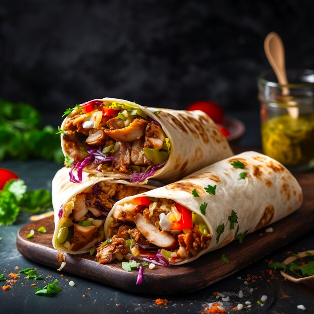

Recipe
Home
Doner

Description
If you are a bit familiar with Turkish cuisine, you know the world-famous döner kebab, the irresistible, juicy enormous kebab cooked on a vertical rotisserie.
Here is an easy homemade version of Turkish Doner Kebab Recipe that tastes as good as the real thing.
Ingredients
- 1 large onion
- 1 kilo/2lb ground beef (15% fat)
- 1 ½ cups uncooked white rice
- 2 teaspoons salt
- ½ teaspoon black pepper
- ½ teaspoon cumin
- 1 teaspoon garlic powder
- ½ teaspoon isot pepper (or paprika)
- 4 tablespoons yogurt
- 2 tablespoons milk
- 2 tablespoons butter to cook döner
Steps
- Puree the onion in a food processor.Sieve its juice into a large mixing bowl.
We just need the juice.
- Put the ground beef, döner kebab seasoning, salt, yogurt and milk in the same bowl.
Combine them well using your hand.
Give it a log shape.
- Transfer it on a baking paper and wrap it tightly.
- Let it rest in the fridge for 2 hours. Then transfer it to the freezer and let it sit
there for 8 hours or overnight.
- Remove it from the freezer and let it sit on the counter for 5 minutes.
Hold the döner log with a piece of baking paper and carefully make large thin slices using a sharp knife.
- Heat one teaspoon butter in a non stick pan over high heat.
Line sliced döner pieces in a single layer and cook both sides until nicely brown.
- Cook döner in batches and never overload the pan.